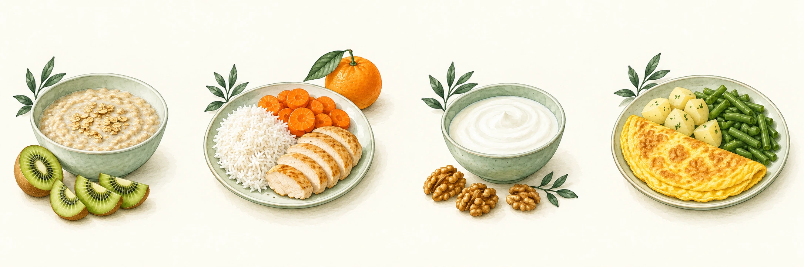

SITUACIONES ESPECIALES
Colon irritable
Aliviar molestias sin dejar tu dieta cada vez más pequeña.
Lo esencial
El síndrome de intestino irritable puede causar dolor de barriga, hinchazón y cambios en las deposiciones: diarrea, estreñimiento o ambos. Hay una mayor sensibilidad y cambios en el funcionamiento del intestino. Los síntomas son reales y el diagnóstico debe hacerte un profesional.
No todo dolor de barriga es colon irritable
Antes de quitar muchos alimentos, confirma el diagnóstico. Si te van a estudiar enfermedad celíaca, no retires el gluten antes de las pruebas: puede alterar el resultado.
Comer con menos molestias
| Suele ser útil | Conviene probar con cuidado |
|---|---|
| Comidas regulares, sin grandes atracones | Saltarse comidas y luego comer mucho. |
| Avena y fibra soluble, aumentando poco a poco | Añadir mucho salvado o fibra de golpe. |
| Agua y comidas sencillas | Mucho alcohol, café, bebidas con gas o fritos si notas síntomas. |
| Lácteos sin lactosa si hay mala tolerancia | Quitar todos los lácteos sin buscar una alternativa con calcio. |
La fibra se adapta al tipo de síntomas. La soluble, como la de avena o el psyllium, puede ayudar; un suplemento se valora contigo. Añádela poco a poco y con líquido según tu pauta.
Si se propone una dieta baja en FODMAP
Los FODMAP son algunos hidratos que se absorben peor y pueden producir gas y molestias. No son sustancias tóxicas. El plan tiene tres etapas: reducir durante 2 a 6 semanas, probar reintroducciones y mantener la mayor variedad tolerada. Si no mejora, hay que reevaluar; no seguir quitando alimentos.
Ideas para probar y comparar
Estas alternativas sirven para conversar en consulta, no son una lista universal de permitidos. La cantidad y la suma de alimentos de una comida cambian la tolerancia.
| Si te da molestias… | Una alternativa para probar |
|---|---|
| Leche con lactosa | Leche o yogur sin lactosa, si el problema es la lactosa. |
| Manzana o pera | Una porción de kiwi, naranja o fresones. |
| Mucha cebolla o ajo | Hierbas, especias suaves o aceite aromatizado sin trozos de ajo. |
| Muchos garbanzos o lentejas de golpe | Una cantidad menor de conserva escurrida y enjuagada, si se tolera. |
| Chicles o dulces con polioles | Revisa sorbitol, manitol y otros ingredientes; prueba a reducirlos. |
• Lleva un registro breve: alimento y cantidad, dolor de 0 a 10, hinchazón y tipo de deposición. Añade estrés, sueño y menstruación si influyen.
• Planifica una opción sencilla cuando salgas: arroz o patata, proteína y una verdura que ya toleres. Pide las salsas aparte.
• La preparación importa. Prueba verdura cocinada si la cruda te resulta difícil; cambia solo una cosa y observa.
Menú semanal y fuentes
Elige las porciones que toleres. No es una dieta baja en FODMAP prescrita ni un menú para repetir con restricciones indefinidas.

Las imágenes muestran ejemplos del lunes. Sigue los alimentos de la tabla para los otros días.